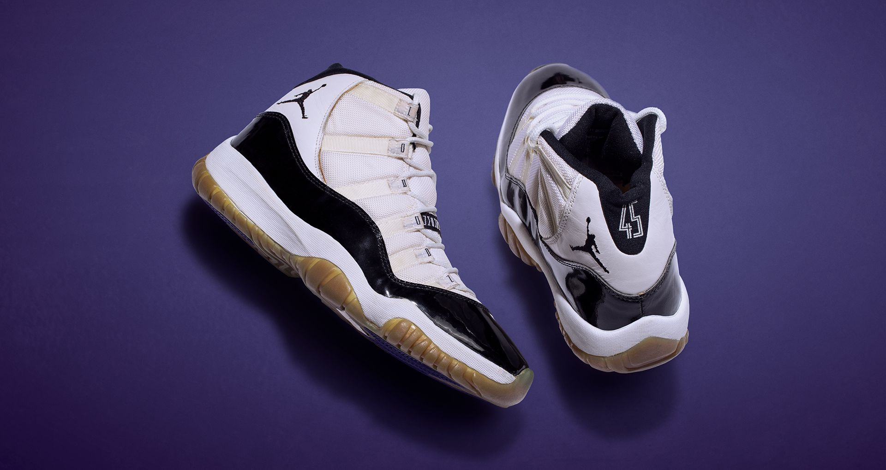
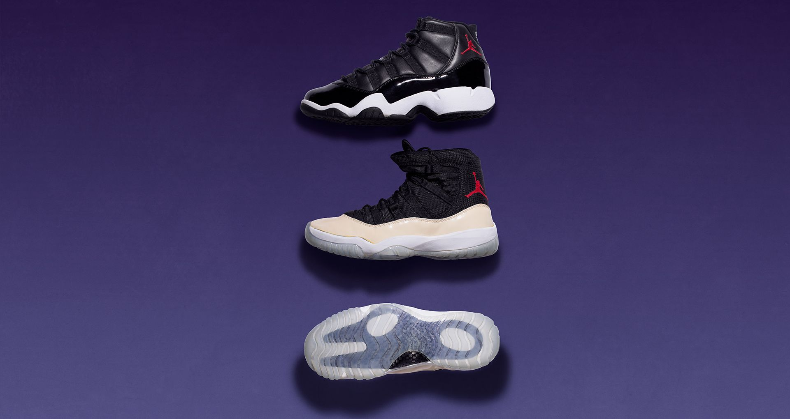
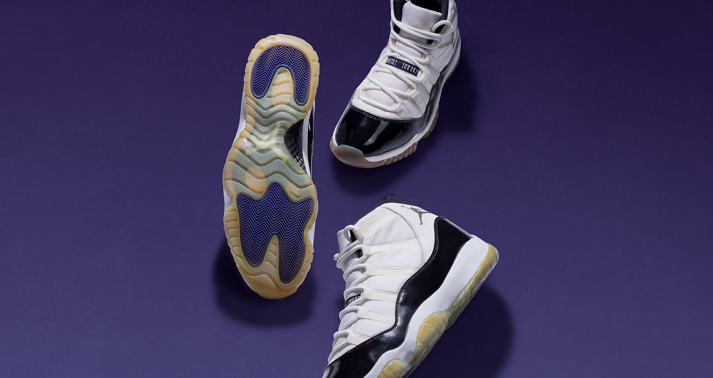
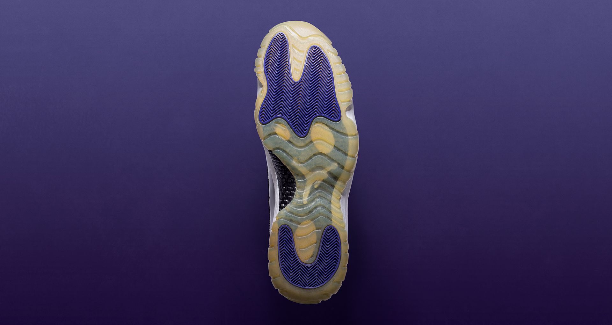

In 1993, Michael Jordan announced that he'd step away from the league to take on the challenge of professional baseball. The news that the game's most recognised figure would be leaving at the height of his career triggered many questions, including the state of his Air Jordan signature footwear line. While many felt it should not continue, there were a select few who still believed, including designer Tinker Hatfield, who began his work for the line with the Air Jordan III.
Some thought the line should conclude with the Air Jordan X, but Hatfield still believed it should continue even if Michael had no presence on the hardwood. "My impression was that, in the marketplace, he had already transcended the sport and it didn't matter. It didn't matter as much if he was playing or not", Hatfield explained. Like most innovators, Hatfield followed his gut and began work on what would go on to become The Grail—the 11th Air Jordan.

In his competitive spirit, he wanted it to be one of the most innovative basketball shoes ever. "Like an athlete who's trying to win, I sort of took over and I put more thought and more technology and more innovation into the idea of the Jordan XI than anything I'd ever done before in my entire life at Nike. And that's why the shoe ended up with so many firsts", he shared. "It was partly me trying to prove that we can still do great design work even if Michael wasn't playing, and that innovation sells".
These "firsts" include the use of a full-length carbon-fibre plate specifically developed for the XI. Leveraging high-speed footage of athletes' footwear in action, Hatfield landed on this idea after noticing some basketball shoes were too flexible, causing bigger athletes to over-flex. Coupling that insight with his experience playing American football in high school, Hatfield began prototyping and developing a plate for the XI. "When I had a new pair of boots, they were a little bit stiff when walking out to the field, but on game day you just get electrified and go. American football boots start to become a performance tool because they're so stiff and you can move a little quicker". The full-length carbon-fibre plate would be coupled with full-length Nike Air cushioning in the finished product.

As with all Air Jordan performance models, the team always wants to meet Michael's wants and needs. The Air Jordan XI's iconic shine stemmed from a specific request from the man himself. "Michael had always been asking about 'could we ever do a shiny basketball shoe?' And he didn't know what that meant, and neither did I, until I found a Japanese custom-made Nike Baseball shoe". The patent leather on the boot not only provided shine and kept things clean, but Hatfield also noticed it served as a form of support thanks to its rigidity.
Building on that thought, he came up with the concept of this patent leather rand for the XI, acting as a form of containment for Michael on the court. Not only did it serve a performance purpose, it brought luxury to the hardwood unlike any shoe before it. Aesthetically, Hatfield applied the rand through the lens of a performance vehicle. "I wanted the rand of the shoe to be like the body of a car, shiny and easy to clean", Hatfield described. "I had drawn some cars, and so this shoe was like a car in that it had a shiny body. But then it's a convertible, so it had a cloth top".

The cloth top led to the Air Jordan XI's unique ballistic nylon upper. The team sourced a high-quality, durable nylon that had long been used on camping backpacks. The upper also featured a one-of-a-kind "speed-lacing" system with the use of nylon webbing loops. This was born from another insight straight from MJ, as early prototypes (pictured above) featured an asymmetrical tongue, which he did not want as he felt it may be tough for wearers to easily slip into.
Once the shoe was developed, it was then time to colour it up unlike any Air Jordan before it. While it was the white and black look that would instantly become part of its rise to grail status, it was really the dark Concord accents that made it unique. "I thought it should be a white and black shoe that could go with anything, but I threw purple on the bottom just to let everybody know, not only was I doing this crazy shoe, but I wasn't even going to go with any team colours, and I chose Concord Purple just to mess with people".

Hatfield would go on to give Michael a pair with one very specific rule: don't wear them. "He comes back and starts practising in that shoe. We told him, 'Man, don't wear these in the game. Don't wear these in the game because we are not ready to commercialise these things yet'", Hatfield recalled sharing with MJ. Of course, in his unexpected MJ way, Michael went on to lace up the Air Jordan XI for the first time in the Eastern Conference semi-finals vs. the Orlando Magic.
While it may have been months before the model's retail release, the shoe would go on to instantly become that grail that everyone wanted. "It turned out to be brilliant on Michael's part, because the introduction of that shoe was unprecedented". Twenty-three years later, the iconic silhouette that brought luxury to the court and beyond still holds its grail status today.